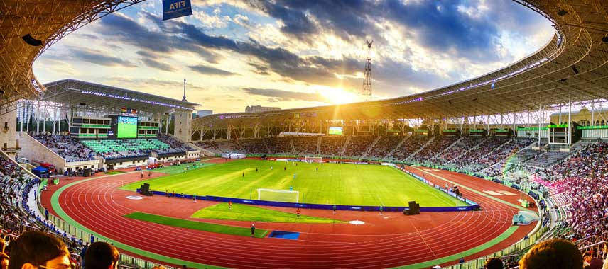

Karabağ Futbol Kulübü
Takımın Tarihçesi

Karabağ Futbol Kulübü, 1951 yılında Azerbaycan'ın Ağdam şehrinde kurulmuştur. Kulüp, 1993 yılında yaşanan Karabağ Savaşı nedeniyle Bakü'ye taşınmak zorunda kalmıştır. Karabağ FK, Azerbaycan futbolunun en başarılı ve tanınmış kulüplerinden biridir.
Başarılar
Karabağ FK, Azerbaycan Premier Ligi'nde birçok şampiyonluk yaşamış bir kulüptür. Takım, 8 kez Premier Lig, 6 kez de ülke kupası kazanmıştır. Karabağ FK, UEFA Şampiyonlar Ligi ve UEFA Avrupa Ligi'nde de önemli başarılar elde etmiş, Avrupa kupalarında grup aşamalarına katılma başarısını göstermiştir.
Stad ve Taraftarlar
Karabağ FK, maçlarını Bakü'deki Tofiq Bəhramov Stadyumu'nda oynamaktadır. Bu stadyum, yaklaşık 31.000 seyirci kapasitesine sahiptir ve Azerbaycan'ın en büyük stadyumlarından biridir. Karabağ FK'nın taraftar grubu olan "İmarət" taraftarlar, takımını büyük bir coşkuyla desteklemektedir.
Daha Fazla Bilgi
Karabağ Futbol Kulübü hakkında daha fazla bilgi edinmek ve güncel haberleri takip etmek için resmi web sitesini ziyaret edebilirsiniz.